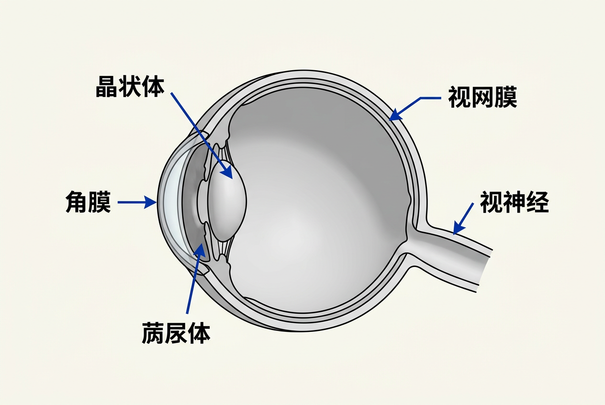
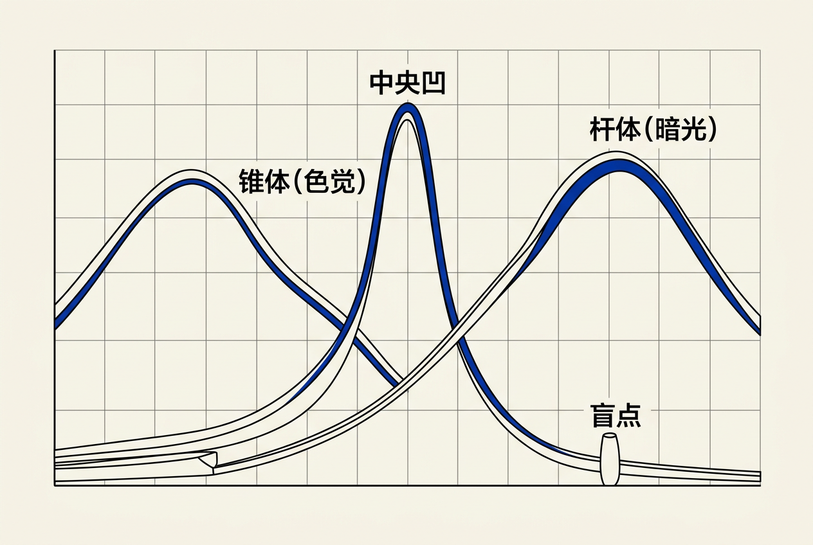
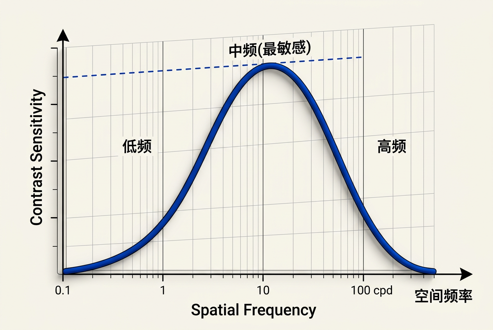
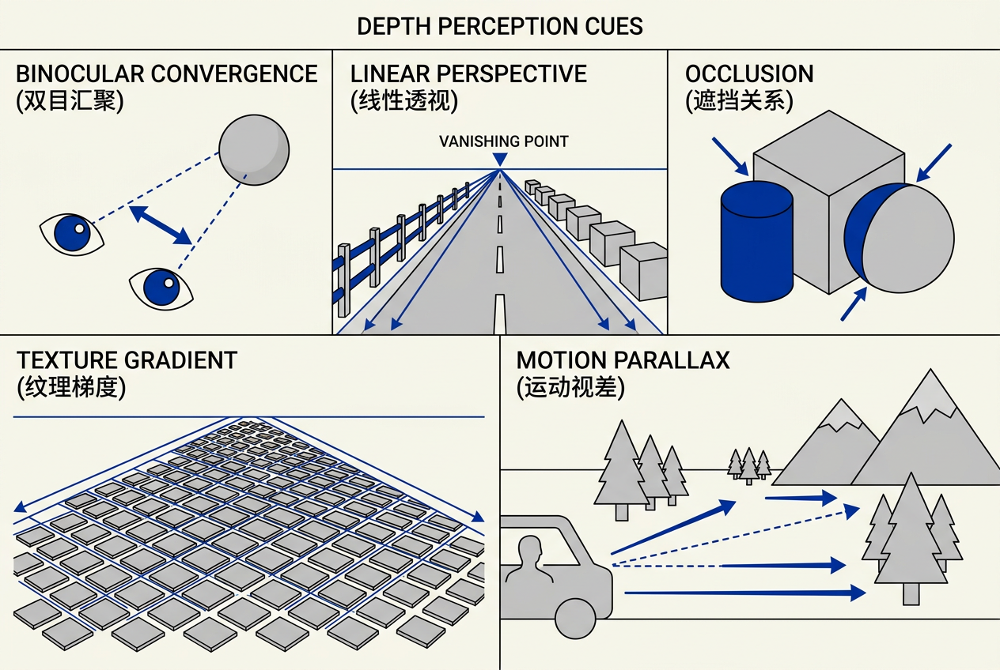
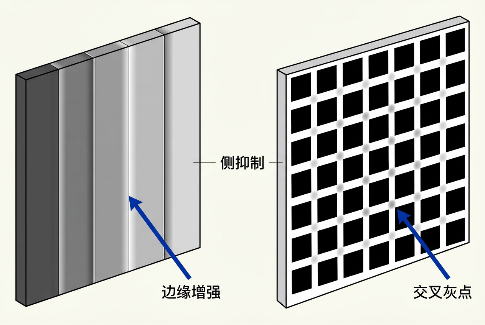

第19章：视觉感知 — 零基础讲义
讲义说明
本讲义基于 Steve Marschner & Peter Shirley 所著《虎书5》第5版第19章（p.525-568）。
本章是图形学的"用户"——它告诉你人类视觉如何工作，从而指导你写出"看起来对"的图形。
学完本章，你将真正理解视觉敏感度、深度感知、视觉错觉、运动感知等核心技术。
本版插画采用 Guizang 材质插画风格重新绘制。
学习目标
- 理解视觉感知的重要性——为什么图形学最终是为"人眼"服务
- 掌握视觉系统解剖（眼/视网膜/锥体/杆体）
- 理解心理物理学——Weber/Fechner/Stevens 定律
- 掌握视觉敏感度（CSDF、CSF）
- 理解深度感知（双目、运动、透视、遮挡）
- 理解视觉错觉（Mach带、同时对比、几何错觉）
- 掌握运动感知（运动视差、光流）
- 理解图形学中的色调恒常性
19.1 视觉科学（Vision Science）
19.1.1 视觉为什么重要
视觉 = 人获取 80% 信息的方式——图形学的"用户"是眼睛。
日常类比：视觉是唯一能从远处获取 3D 信息的感官（其它都需要"接触"或"听觉"）。
19.1.2 视觉感知的目标
把人眼前 2D 像素 → 解释成 3D 世界
两个挑战：
- 物理上信息丢失（光强只是波长的积分）
- 大脑逆向工程出"有意义的"3D 解释
19.1.3 视觉的工程视角
| 影响 | 例子 |
|---|---|
| 质量优化 | 高光区像素可以精度低一点（人眼对低频敏感） |
| 降噪算法 | 边缘要保留，平坦区可降采样 |
| 光照计算 | 不用对所有光线严格积分——视觉是宽容的 |
19.2 眼睛解剖（Anatomy of the Eye）
19.2.1 眼球结构
关键部分：光线 → 角膜 → 瞳孔（光圈） → 晶状体（调焦）→ 视网膜（光敏细胞）

几何参数：
- 角膜曲率 ~ 7.8mm
- 晶状体调焦范围：~25cm 到无限远
19.2.2 视网膜的感光细胞
3 种锥体 + 1 种杆体——细节在 Ch18 色彩学讲过。
空间分布：
- 中央凹（Fovea）：锥体密度最高，视觉最敏锐
- 周边：杆体密度高（暗视觉）
- 盲点（Blind Spot）：视神经穿过的地方

关键洞察：Fovea 只占视野 1-2°——这就是为什么眼睛要不断扫视（Saccades）。
19.3 视觉敏感度（Visual Sensitivity）
19.3.1 心理物理学（Psychophysics）
心理物理学 = "物理刺激 → 感知强度"的科学
3 个经典定律：
| 定律 | 公式 | 含义 |
|---|---|---|
| Weber 定律（1834） | ΔI / I = k₁ | 最小可察觉变化与刺激强度成比例 |
| Fechner 定律（1860） | S = k₂ · log(I) | 感知是"对数"缩放 |
| Stevens 定律（1961） | S = k₃ · I^b | 幂律关系，b 取决于感知维度 |
应用：Stevens 定律是 PBR 渲染中 tone mapping 的基础——感知和亮度是幂律关系。
19.3.2 视觉阈值（JND）
JND = "刚刚能感知到的差异"
应用：
- 颜色量化：4 阶 grayscale 已经能用
- 时间量化：60 fps 看起来连续
- 空间量化：视网膜只有 200 万锥体
核心洞察：JND = 图像压缩的理论基础——JPEG/MPEG 都在用。
19.3.3 对比敏感度函数（CSF）
CSF = "空间频率 vs 视觉敏感度"

形状：钟形——中频最敏感，高频（细节）和低频（亮度）都不敏感。
图形学应用：8x8 DCT 块、mipmap、anisotropic filter 都在用 CSF。
19.3.4 明视觉 vs 暗视觉
| 条件 | 主导 | 峰值 | 颜色 |
|---|---|---|---|
| Photopic（明视觉） | 锥体 | 555 nm | 有色 |
| Scotopic（暗视觉） | 杆体 | 500 nm | 无色 |
| Mesopic（中间视觉） | 两者 | 过渡 | 弱色 |
实战：夜间游戏 → 减少色彩细节（人眼看不到）。
19.4 深度感知（Depth Perception）
19.4.1 五大深度线索
深度感知 = 5 大线索

| 线索 | 机制 | 限制 |
|---|---|---|
| 调节（Accommodation） | 晶状体调焦 | < 2m |
| 汇聚（Vergence） | 双眼会聚角 | < 数米 |
| 双眼视差（Binocular） | 左右眼差异 | < 10m |
| 透视（Perspective） | 线性透视 | 单目 |
| 遮挡（Occlusion） | 前压后 | 顺序 |
19.4.2 视觉调节（Accommodation）
晶状体调焦 = 测 0-2m 内的距离。极近距离有效，超过 2m 模糊，年龄越大越差。
19.4.3 双眼视差（Binocular Disparity）
机制：远点左右眼图像几乎一样，近点差异大。应用：VR/AR、3D 电影、立体显示器。
19.4.4 透视（Perspective）
线性透视 = 平行线收敛于消失点
- 物体大小 = 1/距离（near = 大，far = 小）
- 地平线上方远处
- 消失点在视觉上 "finitize" 场景
19.4.5 遮挡（Occlusion）
遮挡 = "看到前面就猜到后面"。即使单眼也有效，提供绝对顺序。
19.4.6 纹理梯度（Texture Gradient）
远方的纹理元素看起来更密、更小。三个线索：元素大小变小、间距变小、foreshortening。
19.4.7 运动视差（Motion Parallax）
近处动得快，远处动得慢。单眼也有效，被 VR 大量使用。
19.4.8 光流（Optic Flow）
光流 = "视网膜上像素的速度"。用于自运动感知、撞墙时间、避障。
19.5 视觉感知特性（Perception Properties）
19.5.1 亮度恒常性（Lightness Constancy）
亮度恒常性 = "无论光照如何变化，看到的亮度不变"。例：阳光下和阴天的同一张白纸，都看到"白"。
应用：PBR 渲染必须算反射率，不能只看亮度；Tone mapping 保持视觉一致性。
19.5.2 颜色恒常性（Color Constancy）
无论什么光源，看到的颜色"差不多"。机制：von Kries 适应（Ch18 讲过）。
19.5.3 大小恒常性（Size Constancy）
远近不同时，物体大小感知不变。例：手伸到眼前 vs 伸到远处 → 大小一样。
19.5.4 形状恒常性（Shape Constancy）
倾斜观察时，形状感知不变。例：桌子的长方形形状，不管从哪个角度看都"知道"是长方形。
19.6 视觉错觉（Illusions）
19.6.1 Mach 带与 Hermann 网格

19.6.2 Mach 带（Mach Bands）
边缘看起来比实际对比度更强。机制：视网膜神经元的侧抑制——相邻神经元相互抑制。
应用：卡通渲染（Toon Shader）故意利用这个错觉；边缘检测（Canny, Sobel）算法。
19.6.3 同时对比（Simultaneous Contrast）
一个颜色受周围颜色影响。例：灰色在白背景显得更暗，在黑背景显得更亮。
19.6.4 Hermann 网格错觉（Hermann Grid Illusion）
网格交叉处出现"灰点"。机制：侧抑制 + 中心-周围感受野。
19.6.5 Cornsweet 错觉
Craik-O'Brien-Cornsweet 边缘让整个区域看起来"有亮度差异"。机制：局部边缘检测——大脑用边缘推断整体。
19.6.6 形状错觉
- Müller-Lyer 错觉：线段长度受箭头影响
- Ponzo 错觉：同样大小的线段在透视中"远处看起来大"
- 水平-垂直错觉：垂直线看起来比水平线长
19.7 视觉感知对图形学的应用
19.7.1 图像压缩
利用人眼"看不见" = 节省空间
| 通道 | 量化精度 | 原因 |
|---|---|---|
| Y（亮度） | 最细 | 眼睛对亮度敏感 |
| Cb/Cr（色度） | 粗 | 眼睛对色度不敏感 |
JPEG 8x8 DCT：高频系数大幅量化（眼睛对高频不敏感），低频系数保留。
19.7.2 抗锯齿（Anti-Aliasing）
像素是采样——必须满足 Nyquist-Shannon 采样定理。亚像素采样：每个像素采 4/16 个子样本，用 JND 阈值决定"哪些亚样本是需要的"。
19.7.3 运动渲染
- 60 fps：1/60 s ≈ 17ms 每帧
- 30 fps：1/30 s ≈ 33ms 每帧
- 低于 15 fps → 人眼"觉察到卡顿"
19.7.4 立体（Stereo 3D）
| 技术 | 原理 | 质量 |
|---|---|---|
| Anaglyph | 红/青滤色 | 最便宜，劣质 |
| Polarized | 偏光眼镜 | 电影院，主流 |
| Active Shutter | 电子快门 | 高质量，贵 |
19.7.5 调色（Color Grading）
PBR 渲染后的"最后一道工序"。关键工具：Tone curve、Color balance、Saturation、Curves。
19.7.6 游戏 UX 视觉设计
"看得清楚"比"真实"更重要
- 亮黄/亮红：警告、危险
- 亮绿：安全、正常
- 暗蓝/暗紫：神秘、史诗
- 文本对比度 ≥ 4.5:1（WCAG AA）
- UI 元素 ≥ 3:1
全章总结
讲义核心洞察：图形学的"用户"是人眼——理解视觉 = 理解人眼的局限和优势——
- 3 种锥体 + 杆体 = 颜色和暗视觉
- CSF = 空间频率敏感度（mipmap 基础）
- Weber/Fechner/Stevens = 心理物理学
- 5 大深度线索 = 透视/遮挡/汇聚/视差/运动
- 视觉恒常性 = 渲染要保持稳定
- 视觉错觉 = 卡通渲染"作弊"
- 运动视差 + 光流 = VR 必备
关键公式速查：
下一步：第 20 章《色调再现》——理解 HDR、LDR、ACES、tone mapping 等"调色"技术。